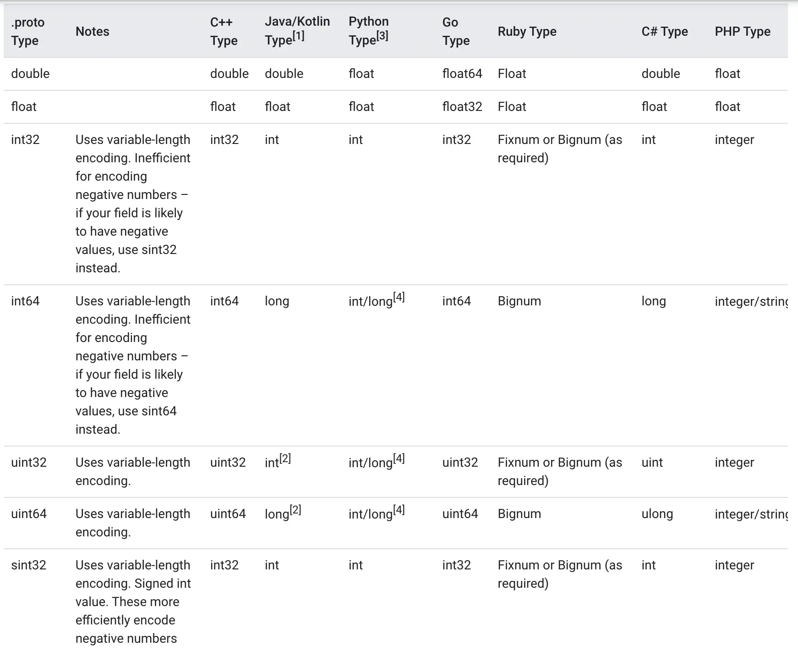
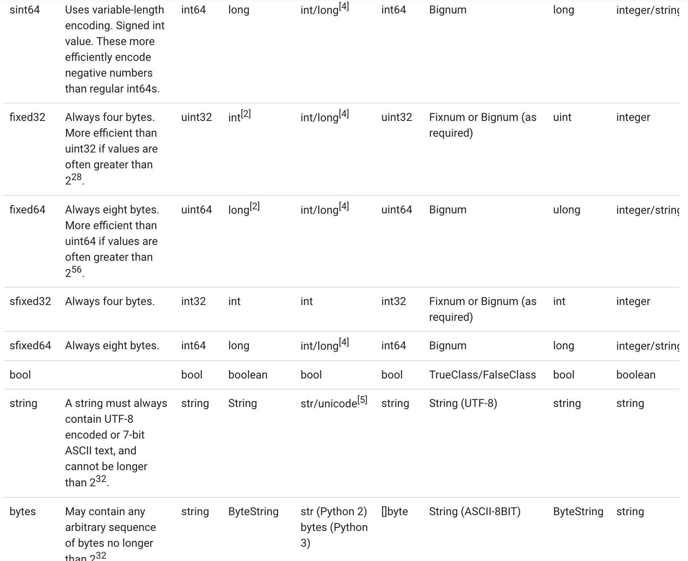
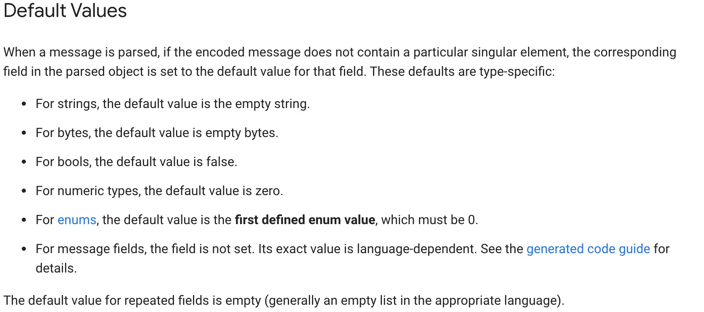

gRPC
AI 导读一分钟导读，先掌握全文主干。
核心观点
- gRPC 基于 HTTP/2 与 protobuf 二进制序列化，天然多路复用、双向流式与跨语言代码生成
- .proto 文件定义契约，protoc 生成各语言骨架
- 2026：gRPC-Go 已到 v1.8x、要求 Go 1.25+；gRPC-Web 2.x、Protobuf Editions、Buf Connect 生产可用
关键结论与取舍
- Buf 工具链（推荐）：类型安全与生成质量优于裸 protoc
- Connect-RPC（gRPC 兼容的优雅替代）值得评估
gRPC 是什么
gRPC 是 Google 开源的跨语言高性能 RPC 框架，基于 HTTP/2 传输和 Protocol Buffers（protobuf） 二进制序列化，天然支持多路复用、双向流式通信和跨语言代码生成。服务间用 .proto 文件定义契约，由 protoc 生成各语言客户端 / 服务端骨架，是微服务、云原生架构里最常见的服务间调用协议之一。
截至 2026 年，gRPC-Go 已经迭代到 v1.8x 系列（v1.81.1 于 2026 年 5 月发布），并开始要求 Go 1.25+；生态侧 gRPC-Web 2.x、Protobuf Editions、Buf Connect 协议都进入生产可用阶段（详见文末「2026 生态更新」）。
相关网站
入门建议先读官方 Basics tutorial 走通「编写 .proto → 生成代码 → 发起调用」的完整流程，再对照本页图示理解工具链各环节；生产选型时重点看文末「buf 工具链」和「Connect-RPC」两节，2026 年已经不建议裸拼 protoc 和插件。
- gRPC 官方文档
- gRPC-Go 源码
- Protocol Buffers 官网
- protobuf 下载
- protobuf-go 插件
- grpc-gateway（HTTP/JSON 转 gRPC）
- buf（现代 protobuf 工具链）
- Connect-RPC（gRPC 兼容替代）
- gRPC-Web 浏览器直连
# macOS 采用 brew 安装 protobuf
brew list | grep protobuf
brew info protobufgolang 使用图示
- 生成 message 对应的
.pb.go文件
- 增加 service 定义后，同时生成 gRPC 服务骨架
grpc.pb.go
- 客户端使用：Dial 建连 → NewClient 创建 stub → 直接调用 RPC 方法
- 服务端使用：监听端口 → NewServer → 注册服务实现 → Serve 等待请求
实践示例
protoc --proto_path=IMPORT_PATH \
--cpp_out=DST_DIR \
--java_out=DST_DIR \
--python_out=DST_DIR \
--go_out=DST_DIR \
--ruby_out=DST_DIR \
--objc_out=DST_DIR \
--csharp_out=DST_DIR \
path/to/file.proto
# --go_out 表示启用 protoc-gen-go 插件生成 message 代码
# proto 文件与脚本同目录时，先 cd 到该目录，避免相对路径问题
# 常见报错: Could not make proto path relative: *.proto: No such file or directory
protoc --cpp_out=../cpp --python_out=../python --go_out=../event *.proto
# --go-grpc_out 表示启用 protoc-gen-go-grpc 插件生成 gRPC 服务代码
protoc --go_out=../event --go-grpc_out=../event *.proto- user.proto 内容
syntax = "proto3";
option go_package = "./;event";
import "person.proto";
service User {
rpc Reg(Person)returns(Person){}
}- example.proto 内容
syntax = "proto3";
package example;
// protoc-gen-go: The import path must contain at least one period ('.') or forward slash ('/') character.
// 参见 https://developers.google.com/protocol-buffers/docs/reference/go-generated
// "./;event" 表示直接生成文件到 go_out 目录，包名为 event
option go_package = "./;event";
// vscode-proto3 插件提示找不到 other.proto 时，直接打开 other.proto 所在目录（而不是父目录）
import "other.proto";
// 单行注释
message Person {
string name = 1;
int32 id = 2;
repeated string emails = 3;
map<string, int32> dict = 4;
repeated Order orders = 5;
}
/*
多行注释
*/
message SearchResponse {
message Result {
string url = 1;
string title = 2;
repeated string snippets = 3;
}
repeated Result results = 1;
}- other.proto 内容
syntax = "proto3";
package example;
option go_package = "./;event";
message Order {
int64 id = 1;
uint64 date = 2;
string customer = 3;
double price = 4;
string goods = 5;
string remark = 6;
}数据类型



选型要点：整数 id 别用 int64 硬扛——在 JavaScript / Swift 这类 52 位安全整数环境里会丢精度，跨端字段用 string 承载；bytes 适合二进制和带长度前缀的数据；enum 第一个值必须是语义默认值（0），新增枚举值优先 reserved 占位；protobuf 的向后兼容只保证「旧客户端读新数据不崩」，不保证语义正确，字段语义变更要当作破坏性变更对待。
更多
- gRPC + Opentracing + Zipkin 分布式链路追踪系统——历史方案，2026 年统一迁移到 OpenTelemetry，Go 侧用
go.opentelemetry.io/contrib/instrumentation/google.golang.org/grpc自动插桩就行，不用手写拦截器。 - gRPC vs HTTP/REST 怎么选：服务间内部调用、强类型契约、高频长连接、需要双向流 → gRPC；对外公开 API、浏览器 / 弱类型下游直连、调试便利性优先 → REST 或 Connect。gRPC 的代价是调试和抓包成本高（需要 grpcurl 或专用代理），别在公网直接暴露没加防护的 gRPC 端口。
- 性能常识：protobuf 比 JSON 更小、编解码更快，但收益强弱取决于消息规模和调用频率——大消息场景收益显著，小消息高频场景 HTTP/2 连接复用才是大头，选型前先按真实负载压测，别只信框架宣传。
gRPC 2026 生态更新
gRPC-Go 版本与安全
- 版本节奏：gRPC-Go 保持月度小版本迭代，2026 年 5 月发布 v1.81.1（安全修复版），年中已经推进到 v1.8x；v1.81 起最低支持 Go 1.25，建议跟着 Go 1.26 一起升级。
- 安全加固：2026 年上半年披露并修复了 xDS RBAC 鉴权绕过（GO-2026-6061 等）——升级 xDS 场景务必同步跟进补丁版本，避免 URI / DNS SAN 匹配回退导致的未授权访问。
- 可观测性：v1.81 起 per-call metrics 支持自定义标签（gRFC A108），客户端 / 服务端 RPC 指标和链路分离，配合 OpenTelemetry 采集更干净。
HTTP/3 与 QUIC
面向弱网、高丢包和移动端场景，基于 QUIC 的 HTTP/3 传输逐步进入 gRPC 生态：连接建立从 1-RTT 降到 0-RTT，并从根本上消除 HTTP/2 的 TCP 层队头阻塞。gRPC-Go 和 C-core 都以实验 / 预览方式支持 QUIC 客户端通道，2026 年还没全量默认开启，生产接入前需要评估服务端和中间链路（负载均衡、防火墙 UDP
生态新进展
- gRPC-Web 2.x：2025 年发布 2.0，支持 Protobuf Editions 并用新的代码生成 API，浏览器直连 gRPC 服务（经 Envoy / gRPC-Web 代理）更成熟。
- Protobuf Editions：proto3 演进成 Editions 版本模型，统一管理字段行为和平台特性；2026 年各语言插件和 buf 都已全面支持。
- Buf 工具链：
buf一站式管理 lint、breaking 检查和代码生成，替代裸protoc+ 插件拼装，是 Go 项目的推荐做法。 - Connect-RPC：Buf 推出的 Connect 协议和 gRPC 双向兼容，同时暴露 HTTP/JSON 端点，不用 grpc-gateway 就能被浏览器和普通客户端访问（见下节）。
Buf 工具链（推荐）
buf 是现代 Protobuf 管理工具，替代 protoc + 各种插件：
# 安装 buf
brew install bufbuild/buf/buf
# buf.gen.yaml - 代码生成配置
version: v2
plugins:
- local: protoc-gen-go
out: gen/go
- local: protoc-gen-go-grpc
out: gen/go
- local: protoc-gen-connect-go
out: gen/go
# 生成代码
buf generate
# 检查兼容性
buf breaking --against .git#branch=mainConnect-RPC（gRPC 兼容优雅替代）
Connect-RPC 兼容 gRPC 协议，同时支持 HTTP/JSON 客户端，不用 gRPC 代理：
// Go 服务端（connect-go 生成式 API）
import "pingv1connect"
func main() {
mux := http.NewServeMux()
// connect 生成的 NewXxxServiceHandler 返回 (路由路径, http.Handler)
path, handler := pingv1connect.NewPingServiceHandler(&PingServer{})
mux.Handle(path, handler)
http.ListenAndServe(":8080", mux)
}
// 客户端可以直接用 HTTP/JSON 调用
// curl -H 'Content-Type: application/json' \
// -d '{"name":"world"}' \
// http://localhost:8080/ping.v1.PingService/Ping